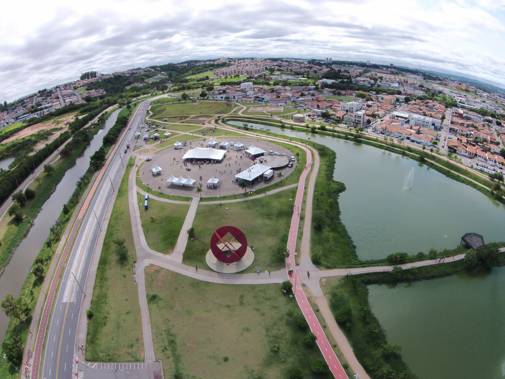

Parque das Águas
O Parque “Maria Barbosa Silva” – Parque das Águas – é cenário de algumas das principais atrações culturais, artísticas e de lazer da cidade, que chegam a reunir mais de 20 mil pessoas por dia.
O Parque “Maria Barbosa Silva” – Parque das Águas – é cenário de algumas das principais atrações culturais, artísticas e de lazer da cidade, que chegam a reunir mais de 20 mil pessoas por dia.
O parque possui uma área de 155.649 m2. Seus atrativos são: parque infantil, quiosques com churrasqueiras, mesas de piquenique, pista de caminhada, vegetação e lagos.